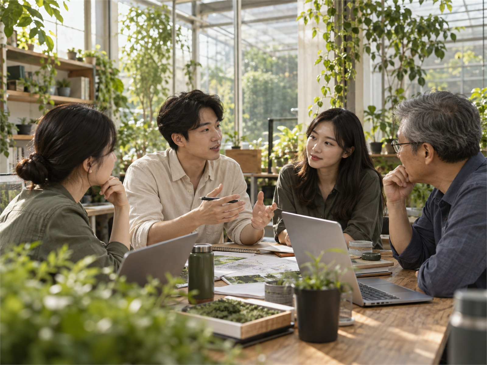

열정을 가지고 도전할 줄 아는 인재를 새로운 주인공으로 모십니다.
Credit기본에 충실Game-changer용기있는 도전Harmony함께하는 조화 
Do it right now!
One More Thing, One More Step Move fast!
실패를 두려워하지 않고 행동으로 옮기는 사람이 있습니다. 새로운 시도를 귀한 자산으로 생각합니다.
I always stand behind my people and their values
서로의 전문성을 존중하고 자유롭게 의견을 나누는 팀을 만듭니다.
복리후생
구성원의 행복한 삶을 위해 다양한 복지제도를 운영합니다.
○Happy Day구성원의 성장과 생활을 지원합니다.○Breakfast Day구성원의 성장과 생활을 지원합니다.○점심 식대 제공구성원의 성장과 생활을 지원합니다.○자율로운 연차구성원의 성장과 생활을 지원합니다.○팀 회식비 지원구성원의 성장과 생활을 지원합니다.○커피/간식구성원의 성장과 생활을 지원합니다.○직무교육구성원의 성장과 생활을 지원합니다.○자기계발 지원구성원의 성장과 생활을 지원합니다.○Birthday구성원의 성장과 생활을 지원합니다.○수평적 문화구성원의 성장과 생활을 지원합니다.○경조사 지원구성원의 성장과 생활을 지원합니다.○명절 선물구성원의 성장과 생활을 지원합니다.○자녀 학교 입학 축하금구성원의 성장과 생활을 지원합니다.○리조트 지원구성원의 성장과 생활을 지원합니다.○체력단련실 운영구성원의 성장과 생활을 지원합니다.○우수사원 포상구성원의 성장과 생활을 지원합니다.○동호회 지원구성원의 성장과 생활을 지원합니다.○유급 휴게시간구성원의 성장과 생활을 지원합니다.○반반차 제도구성원의 성장과 생활을 지원합니다.○사내 대출구성원의 성장과 생활을 지원합니다.